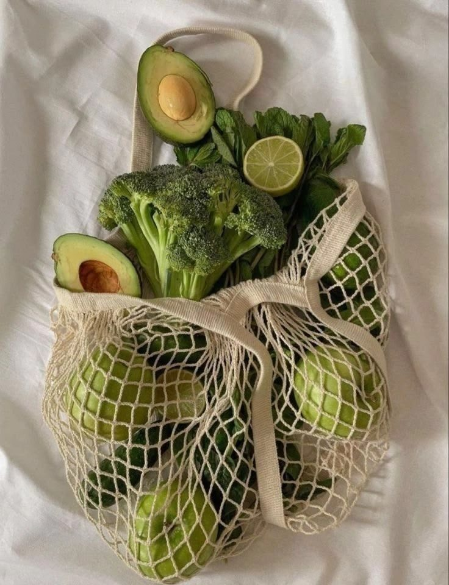
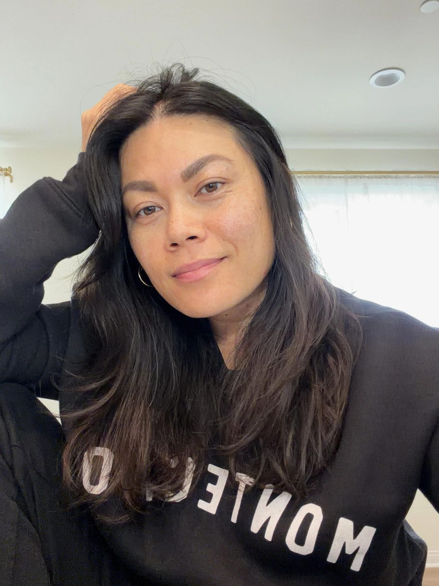
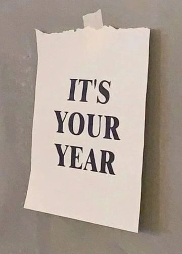
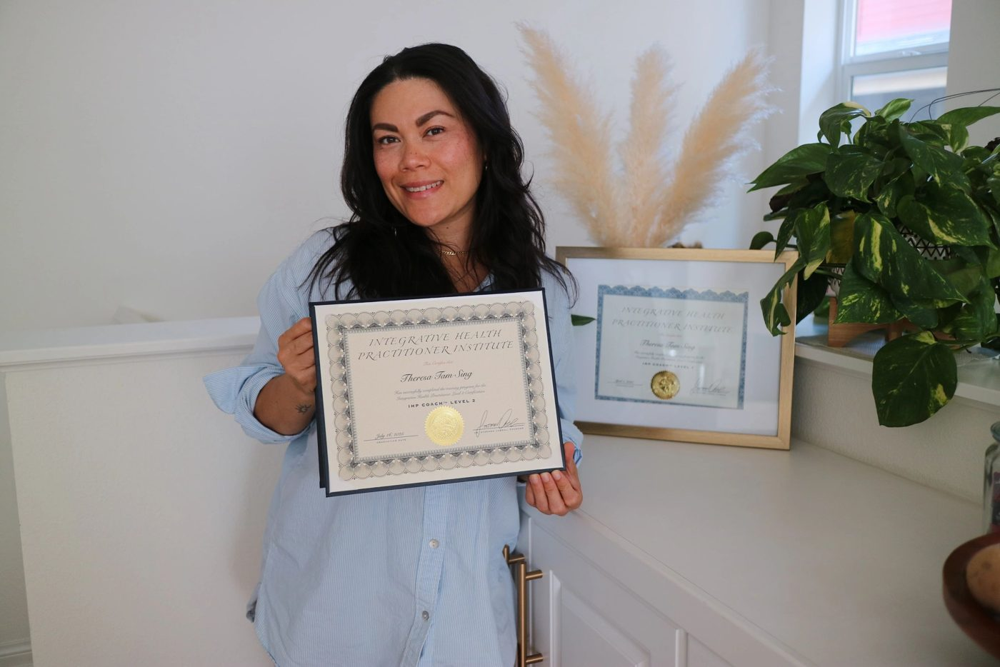

Blog
Gut health, hormones, cycle syncing and real life, from my own healing and my work with clients.
-

August 7, 2026
Should you be eating more Fiber?
When I saw a specialist for my unbearable stomach pain, I was told I needed to eat more fiber. I thought to myself, how will fiber help stomach pain when I do go to the bathroom regularly? All my test results came out fi...
-
July 6, 2026
My journey into Wellness...
If you had told me years ago that I would become an Integrative Health Practitioner and spend my days helping women improve their hormones, gut health, energy, and overall well-being, I probably wouldn't have believed yo...
-

June 11, 2026
What building Muscles do for your Hormones and Long-Term Health!
I can honestly say the thought about building muscles makes me a little paranoid because my mind immediately thinks of bodybuilding, a bulky type of muscle. When I learned about hormones and long-term health, muscles wer...
-

May 21, 2026
What to eat during each phase of your cycle- why it works!
If you’ve ever noticed that some weeks you feel energized and glowing… while other weeks you’re exhausted, bloated, craving chocolate, or emotionally sensitive — that’s not random.
-

April 28, 2026
How I slowly started to heal and lost weight
Struggling with bloating, weight gain, or painful periods? Here’s my personal wellness journey and how I used gut health and hormone support to heal naturally.
-

April 17, 2026
Your Nervous System Might Be the Missing Piece....
If you feel like you’re doing everything right but your body still isn’t responding… this might be the reason.
-

April 3, 2026
Why Am I Bloated in the Morning?
Waking up bloated before you’ve eaten anything? Learn the root causes of morning bloating—from gut health to hormones—and how to reduce it naturally. Waking Up Bloated? You’re Not Alone
-

March 24, 2026
5 Wellness Tools That Actually Deliver Results
Let’s be honest— The wellness space is loud.
-

March 13, 2026
10 Signs Your Body Is Inflamed (And What to Do About It)
When many people hear the word inflammation, they picture something obvious—like a swollen ankle or a red rash. But inflammation can also exist quietly in the body for months or even years.
-

March 8, 2026
5 Nutrition Questions Women Are Asking
Nutrition advice can feel overwhelming. One day, a food is considered healthy, and the next day it’s blamed for inflammation or hormone issues. Many women today are seeking answers that go beyond weight loss—they want to...
-

February 14, 2026
#1 Wellness Trend for 2026- Gut Health!
In 2026, the modern woman is more health-literate than any generation before her. If you’re a professional woman over 25, your search history probably looks like a masterclass in biohacking: “How to lower morning cortiso...
-

-

January 23, 2026
How Screen Time Affects Your Health!
Screens are everywhere. Phones, laptops, tablets, TVs — for many of us, they’re part of work, school, connection, and downtime. But as screen time has increased, so have questions about how it affects our sleep, mental ...
-

January 9, 2026
Artificial Sugar: What It Really Does to Your Body & Hormones
Artificial sugar is everywhere. It’s in your morning coffee, protein bars, “diet” drinks, gum, flavored waters, salad dressings, and even supplements marketed as “healthy.” For decades, artificial sweeteners have been pr...
-

January 1, 2026
What I'm bringing into the New Year: Health, Wholeness, & Faith!
As the calendar turns and a new year begins, there’s always a quiet invitation to pause—not just to plan, but to reflect. In the past, I approached the new year with pressure: big goals, strict routines, and an unspoken ...
-

December 8, 2025
Estrogen Dominance: What It Is, How It Affects Your Health & More
We often hear the phrase “hormones are out of balance,” but few women truly understand what that means — especially when it comes to estrogen. Estrogen is a beautiful, God-designed hormone that supports so much of what m...
-

November 30, 2025
Top Supplement Combinations for Better Absorption:
What to Take Together & How to Read Labels
-

November 21, 2025
Thyroid Health 101: What Every Woman Needs to Know
If you’ve been feeling “off” — tired no matter how much you sleep, struggling with stubborn weight, dealing with mood swings, hair shedding, or feeling like your hormones are running the show — your thyroid might be whis...
-

November 14, 2025
Benefits of Fasting for Women Over 30
Fasting has become a buzzword in the wellness world — from intermittent fasting to multi-day fasts. But for women over 30, fasting isn’t just about weight loss; it’s a tool to support blood sugar balance, hormone regulat...
-

November 6, 2025
Cycle Syncing Basics — The Beginner’s Guide For Busy Women
If you’ve ever wondered why some weeks you feel like a productivity queen… and other weeks you want to curl up in a blanket + live on FaceTime + dark chocolate — it’s not “just your mood.”
-

October 30, 2025
The Six Nutrients Most Women Over 30 Are Deficient In...
If you’re a woman over 30 and you’ve been feeling off — a little flat in energy, mood swings, hormonal quirks, or just like something behind the scenes is tugging at your vitality — you’re not alone.
-

October 23, 2025
What you should know about toxins and why it matters!
We’re exposed to toxins every day — from our food, air, environment, and skincare. Learn what toxins are, how they affect your hormones and health, and simple ways to reduce your exposure naturally.
-
October 16, 2025
How Hormones, Stress, and Circadian Rhythm Affect Women’s Health
Have you ever eaten well, exercised, and slept reasonably, yet still feel sluggish, irritable, or “off” in your body? You’re not imagining it. Many women experience this because their hormones, nervous system, and circad...
-

October 9, 2025
Detox vs. Cleanse: What's the Real Difference
Which One Do You Actually Need? Well, let's take a look at the difference.
-

October 2, 2025
Menopause: What’s Happening in Your Body & How to Ease Symptoms
If you’re a woman over 30, chances are you’ve heard the word menopause tossed around — sometimes with dread, sometimes with relief. But many women don’t fully understand what’s happening in their bodies during this natu...
-

-

September 25, 2025
How I Finally Figured Out What My Body Was Trying to Tell Me
In 2017, my health completely flipped upside down.
-

September 9, 2025
Why am I bloating?
If you feel like no matter what you eat, you end up bloated, you’re not alone. So many women, including myself, once upon a time shared this same frustration—ordering a salad, sipping on a smoothie, or even eating someth...
-

September 5, 2025
Insulin Resistance: How It Impacts Your Hormones and Gut Health
I don't know about you, but when I would hear "hormones", I typically thought of estrogen, progesterone, and testosterone. It wasn't until I learned more that there are many different hormones. But one hormone often over...
-

September 3, 2025
Why Everyone Should Detox...
Did you know there are over 80,000 approved chemicals in the US, and most are toxic to humans?
-

September 2, 2025
What do you know about your Liver?
Did you know your liver is one of the hardest-working organs in the body? It is associated with over 500 vital bodily functions, winning the award as the body's ultimate multitasker!